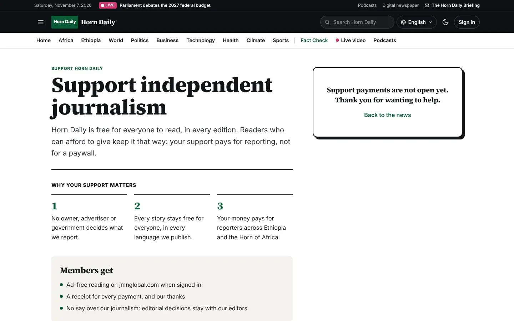

Editions and licensing, data sheet, onboarding and go-live plan, support and maintenance terms, release notes, and the licence agreement, terms of sale, privacy policy, acceptable use and data processing texts.
Note
Background that helps you understand what the system is doing.
Tip
A faster or better way to do something.
Important
Something that can cost you work, money or trust if you skip it.
Danger
A step that cannot be undone, or that can expose data.
Who can do this
The roles or permissions a task needs.
Steps
Text in monospace is something you type or see exactly. Bold names a button, field or menu. Blue links jump to another place in this book; in the PDF they are clickable, and so is every line of the contents and the index. Screenshots show the example outlet Horn Daily in green; your system shows your own name, logo, colour and languages.
| Vol. | Title | For |
|---|---|---|
| 01 | Product Bible | buyers, owners, managers and everyone new to the product |
| 02 | Reader Guide | readers, help-desk staff and audience teams |
| 03 | Newsroom User Manual | reporters, editors and newsroom staff |
| 04 | Advanced User Manual | senior editors, producers, audience and commercial leads |
| 05 | Administrator Manual | system administrators and technical owners |
| 06 | Installation and Operations Manual | IT, hosting and operations staff |
| 07 | Advanced Technical Manual | developers, integrators, architects and security reviewers |
| 08 | Training Manual | trainers, new staff and team leads |
| 09 | FAQ and Troubleshooting | everyone, and the help desk |
| 10 | sham.et Store and Licensing Manual | customers buying licences and Sham operators |
| 11 | Commercial and Legal Pack | buyers, procurement, legal and sales teams |
© 2026 Sham Software Systems Development General Trading PLC. All rights reserved. This documentation is supplied to licensed customers of Sham MediaOS and may be copied for their internal training and use. Product names of third parties (for example Stripe, Google Play, the App Store, Microsoft Store, LiveKit, Jitsi, Cloudflare) belong to their owners and are used only to describe how Sham MediaOS works with them. Features marked as optional need a separate account with that provider; Sham MediaOS does not include those services.
This chapter is for buyers, procurement teams and Sham's sales staff. It describes what each edition includes, how licensing works, what the customer provides, and the technical data a procurement form usually asks for.
| Starter | Professional | Broadcast | Enterprise | Global | |
|---|---|---|---|---|---|
| Typical customer | Small digital outlet | Growing multilingual outlet | Radio or TV station | Media group | National or international group |
| Staff seats | 5 | 25 | 75 | 500 | Unlimited |
| Editions | 1 | 3 | 5 | Unlimited | Unlimited |
| Languages | 3 | 10 | 15 | Unlimited | Unlimited |
| Studios | – | – | 3 | 20 | Unlimited |
| Domains on the licence | 2 | 3 | 5 | 20 | On quotation |
| Newsroom, website, newsletters | ● | ● | ● | ● | ● |
| Local payments, advertising | ● | ● | ● | ● | ● |
| Paywall, memberships | ● | ● | ● | ● | |
| Branded apps (App Studio) | ● | ● | ● | ● | |
| AI desk | ● | ● | ● | ● | |
| Analytics, podcasts, elections | ● | ● | ● | ● | |
| Broadcast, live, interaction, syndication | ● | ● | ● | ||
| Single sign-on | ● | ● | |||
| Several brands, archive tiers, legal holds, audit export | ● | ● | |||
| Several data centres | ● | ||||
| How to buy | Store | Store | Store | Store or quotation | Quotation |
Current prices in US dollars and birr are published at store.sham.et. Global is priced on quotation.
Renewed each year. Updates and support are included while the licence runs. If it is not renewed, the newsroom becomes read-only after 14 days of grace; the public website keeps running.
Yours to keep, with one year of updates included. After that, the software keeps working; optional update years bring new versions.
| Item | Notes |
|---|---|
| A server or cloud account | See the sizes in the Installation Guide |
| Domain names and DNS access | For the website, API, newsroom and media addresses |
| An e-mail sending service | SMTP or a transactional e-mail provider in the outlet's name |
| Merchant accounts | For each payment method the outlet wants (Stripe, PayPal, Chapa, telebirr, ArifPay, bank) |
| Store developer accounts | Google Play, Apple App Store, Microsoft Store, for branded apps; opened by the outlet itself, with the stores' own fees |
| Optional outside services | SMS provider, AI provider, object storage, CDN, streaming platforms |
| People | An administrator, an editor-in-chief, and trainees for each role |
A typical outlet goes from order to public launch in four to six weeks. This chapter is the plan Sham and the customer follow together. Dates are filled in at the kick-off meeting.
| Phase | Weeks | Outcome | Customer | Sham |
|---|---|---|---|---|
| 1 Kick-off | 1 | Plan, roles, accounts started | Names the project lead, editor-in-chief and administrator; starts merchant and store accounts | Runs the meeting; shares this plan |
| 2 Infrastructure | 1–2 | Server, DNS, e-mail, HTTPS ready | Orders the server; sets DNS; provides e-mail service | Checks requirements; installs or guides the install |
| 3 Configuration | 2–3 | Brand, editions, structure, roles, integrations | Decides sections, desks, roles, approval chains | Configures with the administrator |
| 4 Content | 3–4 | Archive imported or first content written; fixed pages | Writes About, standards, terms, privacy; prepares the first stories | Helps with imports |
| 5 Training | 3–5 | Every user trained and certified for their path | Releases staff for training | Runs the five-day course (Training Manual) |
| 6 Rehearsal | 5 | A full day of publishing on the hidden site | Runs a normal news day | Watches and fixes |
| 7 Launch | 6 | Public launch | Announces | On call on launch day |
| 8 Hypercare | 6–8 | Stable operation | Reports issues | Daily check-ins for two weeks |
Introductions and contacts.
Goals: editions, languages, channels, launch date.
Edition and seats; what is in scope.
Hosting decision and server order.
Accounts that take time: payment providers, app stores, SMS, e-mail.
Newsroom structure: bureaus, desks, sections, roles.
Content: archive import, fixed pages.
Training dates and groups.
Fill in before phase 3.
| Item | Your answer |
|---|---|
| Outlet name, short name, tagline | |
| Legal name and contact e-mail | |
| Brand colour (hex) and logo files (SVG or PNG) | |
| Editions and their languages, in launch order | |
| Time zone of each edition | |
| Sections of each edition | |
| Desks and bureaus | |
| Staff list with roles and scopes | |
| Approval chains needed | |
| Breaking news policy (who, channels, second confirmation) | |
| Newsletters to launch | |
| Payment methods and plans | |
| Advertising placements | |
| Apps to publish and store accounts | |
| Outside services to connect (SMS, AI, storage, streaming) | |
| Social and messaging accounts per edition |
Administration → Operations Center has a go-live checklist that checks most of these automatically.
At the end of hypercare, the customer's project lead and Sham sign the acceptance: the agreed scope is installed, configured, trained and running. Open items, if any, are listed with dates.
Customer: ______________________________ Edition: ____________ Licence ID: ______________________
Scope delivered as agreed: ☐ yes ☐ with the open items listed below
Open items: _________________________________________________________________________
For the customer: name ______________________ signature ______________ date ___________
For Sham: name ______________________ signature ______________ date ___________
This chapter describes how support works. The exact level (hours, response times, channels) is the one named in the customer's order or contract; the table below is the standard offer that applies when nothing else was agreed.
For Sham: confirm before publishing
The response times and hours below are a proposed standard. Confirm or change them, and put the agreed values in each contract, before this chapter is given to customers.
Support does not cover: the customer's server, network, e-mail or outside services; changes the customer made to the code; content; or training beyond what was ordered. Sham can provide these as separate services.
| Severity | Example | First response | Target for a fix or workaround |
|---|---|---|---|
| 1 Critical | Website down, data at risk, security breach | 2 hours, every day | 1 day |
| 2 Major | Newsroom cannot publish; a main feature fails | 4 working hours | 3 working days |
| 3 Minor | Part degraded; workaround exists | 1 working day | Next update |
| 4 Question or request | How-to, suggestion | 2 working days | As planned |
Working hours: Monday to Friday, 08:30–17:30 East Africa Time, except Ethiopian public holidays.
Collect: customer reference, version, time, page address, exact message, steps.
Write to Sham support by e-mail, or through the channel named in the contract.
For severity 1, also telephone.
Never send passwords, recovery codes, keys or the .env file.
Report suspected vulnerabilities to Sham's security contact (published on sham.et and at /developers/security). Sham acknowledges within two working days, keeps the reporter informed and credits them if they wish. Fixes are released as signed patch updates.
Last updated: 7 November 2026
Sham Software Systems Development General Trading PLC
This Software Licence Agreement (the "Agreement") is between Sham Software Systems Development General Trading PLC, a private limited company registered in Ethiopia under commercial registration number [COMMERCIAL REGISTRATION NO.] and TIN [TIN], with its address at [REGISTERED ADDRESS], Addis Ababa, Ethiopia ("Sham", "we", "us"), and the person or organisation that buys, installs or uses Sham MediaOS (the "Customer", "you").
You accept this Agreement when you tick the acceptance box in the store, sign an order form that refers to it, or install or use the Software, whichever comes first. If you accept for an organisation, you confirm that you have authority to bind it. If you do not accept this Agreement, do not install or use the Software.
1.1 "Software" means Sham MediaOS: the server application, newsroom, website, installer, mobile app templates, documentation, and any update we supply under this Agreement.
1.2 "Product Edition" means the commercial tier you buy: Starter, Professional, Broadcast, Enterprise or Global.
1.3 "Publication Edition" means an edition of your publication inside the Software (for example, a country or language edition). Each Product Edition allows a number of Publication Editions.
1.4 "Licence Key" means the digitally signed key we issue to you. It records your name, Product Edition, domains, limits, features, issue date, expiry date (if any), end of updates and whether it is an offline licence.
1.5 "Installation" means one running deployment of the Software with its own database, identified by the random installation ID that the Software creates.
1.6 "Licensed Domains" means the domain names listed in your Licence Key.
1.7 "Term" means the period for which you bought the licence: one year for a yearly licence, or without end date for a perpetual licence.
1.8 "Update Period" means the period during which you are entitled to updates and support.
1.9 "Order" means your purchase in the store at store.sham.et, or an order form or quotation that you and Sham have accepted.
1.10 "Your Content" means everything you or your staff, contributors or readers put into or create with the Software, including articles, media, reader accounts and personal data.
2.1 Subject to this Agreement and to payment of the fees, Sham grants you a non-exclusive, non-transferable, non-sublicensable licence to install and use the Software in object form and in any source form we supply:
(a) on one Installation at a time;
(b) on the Licensed Domains only;
(c) within the features and limits of your Product Edition; and
(d) for the Term.
2.2 You may use the Software to run your own media operations, including publishing to the public through your websites, apps, feeds and newsletters.
2.3 Your staff and contractors may use the Software on your behalf. You are responsible for their compliance with this Agreement.
2.4 You may make a reasonable number of backup copies of the Software and of your database. A backup copy may not be run as a second live Installation.
2.5 You may change the configuration, themes and templates of the Software and build your own extensions and integrations using the documented interfaces. You may modify other parts of the source code that we supply in readable form for your own use, but not the licensing components described in clause 7. We do not support or warrant modified code.
2.6 Sham keeps all rights not expressly granted. The Software is licensed, not sold.
2.7 The Software includes open-source components. Each one is licensed under its own licence, listed in the notices file supplied with the Software. Nothing in this Agreement limits your rights under those licences.
3.1 Each Product Edition includes the features and limits shown in the store at the time of your Order and recorded in your Licence Key. The limits cover staff seats, Publication Editions, interface and content languages, studios and Licensed Domains. Schedule 1 shows the values at the date of this Agreement.
3.2 The Licence Key is the authoritative record of your features and limits. If the store and the Licence Key differ, tell us within 30 days of delivery and we will correct the key.
3.3 The Software enforces limits when a staff role is granted, a Publication Edition or studio is created, or a feature is used. Reaching a limit does not affect existing content or the public website.
3.4 You may upgrade to a higher Product Edition at any time by paying the difference in price shown in the store. We then issue a new Licence Key. You do not need to reinstall the Software.
3.5 If you move to a lower Product Edition, features outside that edition stop working in the newsroom. Your Content is not deleted. Releasing a legal hold remains possible on every Product Edition.
3.6 The Global Product Edition, and any custom terms, are sold on quotation. The signed quotation or order form sets its scope.
4.1 Your Licence Key is bound to the Licensed Domains. If the Software answers on a domain that is not listed, the newsroom becomes read-only.
4.2 The number of Licensed Domains depends on your Product Edition. To add or change a domain, contact sales@sham.et. Extra domains may be charged.
4.3 Each Licence Key is bound to the first Installation that checks in with it. The same key may not be used on a second Installation at the same time.
4.4 To move the Software to a new server, ask our support team to release the licence. The new Installation claims it at its next check-in.
4.5 A test, staging or development Installation needs its own licence or our written permission, unless it runs in trial mode under clause 6.
5.1 The Software contacts our licence server at licensing.sham.et once a day. A check-in sends only:
(a) the licence ID;
(b) the random installation ID;
(c) the host names the Installation answers on;
(d) the Software version; and
(e) usage counts (staff, Publication Editions, languages and studios).
5.2 A check-in does not send Your Content, reader data or personal data about your staff or readers. Our Privacy Policy describes how we handle check-in data.
5.3 If the Software cannot complete a check-in, the newsroom keeps working, with a warning banner, for up to 30 days. After 30 days without a successful check-in, the newsroom becomes read-only until a check-in succeeds.
5.4 If your site cannot connect to the internet for long periods (for example, an air-gapped site), you may ask for an offline licence. An offline licence needs no check-ins and is issued at our discretion.
5.5 You must not block, fake or interfere with check-ins, except by using an offline licence that we have issued.
6.1 A new Installation without a Licence Key runs as a trial of the Professional Product Edition for 14 days from installation.
6.2 The trial is for evaluation only. It is provided "as is", without any warranty, support commitment or liability on our part, to the extent the law allows.
6.3 When the trial ends, the newsroom becomes read-only until you install a Licence Key. The public website keeps running.
6.4 You may not reinstall the Software, reset the database or take any other step to start a new trial on the same site. One trial is allowed per organisation, unless we agree otherwise in writing.
7.1 You must not, and must not allow anyone else to:
(a) remove, disable, bypass, modify or work around the licence checks, the check-in, the Licence Key signature or any other technical protection in the Software;
(b) create, edit, forge or share Licence Keys, or use a key that we did not issue to you;
(c) decode, decompile or reverse-engineer any part of the Software that we supply in encoded or compiled form, except to the extent the law expressly allows despite this restriction;
(d) run one Licence Key on more than one Installation at a time, or on domains that are not listed in it;
(e) sell, rent, lease, lend, sublicense, distribute or transfer the Software or a Licence Key to anyone, except under a written partner or reseller agreement with Sham;
(f) provide the Software to third parties as a hosted service (for example, by running newsrooms for other publishers on your licence), unless your Order or a written agreement allows it;
(g) remove or change copyright notices, licence files or open-source notices in the source code or documentation;
(h) use the Software to build a competing product, or publish benchmarks of the licensing mechanism; or
(i) use the Software in breach of our Acceptable Use Policy or of applicable law.
7.2 Circumventing the licence checks, forging a key, or running a key on more installations than licensed is a material breach. It entitles Sham to terminate under clause 14.3 and to claim damages, in addition to any other remedy the law allows.
7.3 Each copy of the Software may carry an invisible identifier linked to your licence ID. You must not remove it.
8.1 You may present the Software to your staff, readers and the public under your own brand. You may set your own name, short name, tagline, legal name, contact details, colours and logos, and you may remove the names "Sham", "Sham MediaOS", "Sham MediaOS" and "MediaOS" from user-facing screens, e-mails, feeds, metadata and apps.
8.2 You are not required to show "Powered by Sham MediaOS" or any similar credit.
8.3 White-labelling changes how the Software looks. It does not transfer ownership of the Software. You must not claim to own the Software, register it as your own work, or resell it as your own product.
8.4 Technical identifiers in the code (for example, header names and settings keys) may keep their original names.
8.5 You are responsible for having the rights to the names, logos and other brand material you add.
9.1 You may use the Software to build and publish your own branded mobile and web apps, themes, extensions and integrations ("Customer Apps").
9.2 You own the code you write yourself. Sham owns the Software and any Sham code included in a Customer App, such as app templates and client libraries.
9.3 You may distribute Customer Apps to the public, including through app stores, under your own name, as long as they connect to your licensed Installation. The Sham code inside them is licensed to you on the same terms as the Software and only for use with that Installation.
9.4 You are the publisher of your Customer Apps. You are responsible for app store accounts, app store rules, privacy notices for your readers and the content of your apps.
9.5 Customer Apps keep working for readers when your licence lapses, as described in clause 14.6.
10.1 During the Update Period, you may download and install updates, new versions and security fixes that we make generally available for your Product Edition.
10.2 For a yearly licence, the Update Period is the Term.
10.3 For a perpetual licence, the Update Period is one year from the issue date. You may extend it one year at a time by paying 20% of the perpetual licence price then shown in the store for each year. After the Update Period ends, you may keep using the last version released before it ended, without time limit, but you will not receive further updates or support.
10.4 We decide the content and timing of updates. We may change, add or remove features in new versions, but we will not remove a major feature of your Product Edition from the version you already have.
10.5 Some services depend on a valid licence and an active Update Period, including updates, security fixes, the app build service and support.
10.6 We recommend installing security fixes promptly. We are not responsible for problems that a released fix would have prevented.
11.1 During the Update Period, we provide support for the unmodified Software on supported server configurations through the channels and with the response targets described in the store for your Product Edition: [SUPPORT CHANNELS AND RESPONSE TIMES].
11.2 Support covers installation questions, help with features and correction of reproducible defects. It does not cover your own server, network, hosting provider, third-party services, modified code or Customer Apps.
11.3 If you give us access to your Installation for support, you decide what access to give. We use it only to provide the support you asked for, as described in our Data Processing Note.
11.4 Training, custom development, migration and on-site work are available under a separate quotation.
12.1 Your Content belongs to you. The Software stores it on your own servers. Sham does not receive it through the Software and has no rights to it.
12.2 You are the controller of the personal data in your Installation and are responsible for complying with the data protection, media, advertising, consumer and other laws that apply to you. See our Data Processing Note.
12.3 You are responsible for your servers, hosting, security configuration, backups, encryption keys and passwords. If you lose your application key, encrypted data cannot be recovered by us.
12.4 You are responsible for third-party services you connect to the Software (for example, payment providers, e-mail services, AI services, analytics or streaming services) and for their terms and fees.
12.5 You are solely responsible for what you publish.
13.1 For 30 days from delivery of your first Licence Key for a paid licence, we warrant that the unmodified Software, installed on a supported configuration, will perform materially as described in its documentation. If it does not, and you tell us within that period, we will, at our choice, fix the defect, provide a workaround, or end the licence and refund the fees paid for it. This is your only remedy under this warranty.
13.2 Except as stated in clause 13.1, and to the extent the law allows, the Software is provided "as is" and "as available". Sham gives no other warranties, express or implied, including warranties of fitness for a particular purpose, merchantability or uninterrupted or error-free operation.
13.3 We do not warrant that the Software will meet every legal requirement that applies to your publication, or that third-party services will remain available.
13.4 No software that runs on a server you control can be made impossible to tamper with. The licence protections exist to protect Sham. They are not a security feature for you.
14.1 This Agreement starts when you accept it and continues for the Term, unless ended earlier under this clause.
14.2 You may stop using the Software at any time. Fees already paid are refundable only as set out in the Store Terms of Sale.
14.3 Sham may terminate your licence by written notice:
(a) at once, if you breach clause 7.1(a), (b) or (d), or if a payment for the licence is reversed, charged back or not received;
(b) if you commit any other material breach and do not remedy it within 30 days after our notice; or
(c) if we are required to do so by law, a court order or applicable sanctions.
14.4 When a licence expires, a 14-day grace period applies. During it, the newsroom keeps working with a banner, so that you can renew.
14.5 The newsroom becomes read-only when the licence has expired and the grace period has passed, when the trial has ended, when a check-in is overdue under clause 5.3, when the Software runs on an unlisted domain, when the key is missing, or when we revoke the key.
14.6 In read-only mode:
(a) your public website, apps and feeds keep running for your readers;
(b) staff can view, but not create or change, content in the newsroom;
(c) the licence administration pages stay open, so you can install a new Licence Key at any time; and
(d) no content is deleted by the Software or by Sham.
14.7 After a licence lapses for any reason other than termination under clause 14.3(a), you keep a limited, non-exclusive right to run the Software in read-only mode under clause 14.6, so that your readers keep access and you can export your data. If we terminate under clause 14.3(a), this right also ends and you must stop using the Software, but you may export Your Content within 30 days.
14.8 Clauses 7, 8.3, 12, 13, 15, 16, 18 and 19, and any accrued rights, survive the end of this Agreement.
15.1 Nothing in this Agreement limits liability that cannot be limited by law, including liability for fraud, wilful misconduct or gross negligence, or for death or personal injury caused by negligence.
15.2 Subject to clause 15.1, Sham is not liable for loss of profits, revenue, business, advertising income, readers, goodwill or data, or for any indirect, special or consequential loss, even if Sham was told it might occur.
15.3 Subject to clause 15.1, Sham's total liability under or in connection with this Agreement, in any year, is limited to the fees you paid for the licence concerned in the 12 months before the event that gave rise to the claim. For a trial, Sham's liability is limited to zero to the extent the law allows.
15.4 Sham is not liable for failure or delay caused by events beyond its reasonable control, including internet shutdowns, power outages, war, civil unrest, natural disasters, government action or failures of payment providers or hosting providers.
15.5 You will compensate Sham for losses caused by your breach of clause 7, by Your Content, or by your use of the Software in breach of law.
16.1 Sham and its licensors own all copyright and other rights in the Software, its documentation and the Sham, Sham MediaOS and related names and logos.
16.2 If you send us suggestions or feedback, we may use them freely.
16.3 If a third party claims that the unmodified Software infringes its rights, we will, at our choice and cost, obtain a right for you to keep using it, modify it to avoid infringement, or end the licence and refund the unused part of the fees. This does not apply to claims caused by your modifications, Your Content or Customer Apps.
17.1 The Software contains cryptography. You must comply with all export control, import and sanctions laws that apply to you and to the Software.
17.2 You confirm that you are not a person or organisation targeted by sanctions that apply to Sham or to our payment providers, and that you will not use the Software in, or provide it to anyone in, a country or territory where this is prohibited.
17.3 We may refuse an Order, decline to deliver updates or terminate a licence where this is needed to comply with sanctions or export laws, including rules imposed by our payment providers.
18.1 This Agreement is governed by the laws of the Federal Democratic Republic of Ethiopia.
18.2 The parties will first try to settle any dispute by good-faith negotiation between senior representatives. Either party may start this by written notice.
18.3 If the dispute is not settled within 30 days after that notice, it will be decided by the competent courts in Addis Ababa, Ethiopia, which have exclusive jurisdiction, unless the parties agree in writing on arbitration or on another forum.
18.4 Either party may ask any competent court for urgent interim relief, for example to stop circumvention of the licence checks or misuse of confidential information.
18.5 The United Nations Convention on Contracts for the International Sale of Goods does not apply.
19.1 Order of precedence. If documents conflict, the following order applies: a signed order form or agreement with Sham; this Agreement; the Store Terms of Sale; information shown on the store.
19.2 Entire agreement. This Agreement and the documents named in clause 19.1 form the whole agreement about the Software and replace earlier statements about it.
19.3 Changes. We may update this Agreement for future Orders and renewals. The version accepted with an Order applies to that Order until its next renewal.
19.4 Assignment. You may not transfer this Agreement without our written consent, which we will not refuse unreasonably for a transfer to the buyer of your publication. We may transfer it to a successor of our business.
19.5 Electronic form. This Agreement may be accepted, signed and kept electronically. Notices to you may be sent to the e-mail address in your Order. Notices to us must be sent to sales@sham.et.
19.6 Severability. If a court finds any part of this Agreement invalid, the rest remains in force.
19.7 No waiver. A delay in enforcing a right is not a waiver of it.
19.8 Language. This Agreement is written in English. If it is translated, the English version prevails, to the extent the law allows.
19.9 Independent parties. Nothing in this Agreement creates a partnership, agency or employment relationship.
The store and your Licence Key are authoritative. "Unlimited" means no limit is enforced by the Software.
Starter: 1 Publication Edition, 3 languages, 5 staff seats, no studios, up to 2 Licensed Domains. Features: newsroom and CMS, website and PWA, newsletters, local payments, advertising.
Professional: 3 Publication Editions, 10 languages, 25 staff seats, no studios, up to 3 Licensed Domains. Adds: memberships and paywall, branded mobile apps, AI desk, analytics, podcasts, elections and polls.
Broadcast: 5 Publication Editions, 15 languages, 75 staff seats, 3 studios, up to 5 Licensed Domains. Adds: broadcast (rundowns, studios, schedule, graphics), live streaming and relays, Interaction Centre, syndication and Content Credentials.
Enterprise: unlimited Publication Editions and languages, 500 staff seats, 20 studios, up to 20 Licensed Domains. Adds: staff single sign-on, several brands, archive tiers and legal holds, audit export.
Global: unlimited, as set out in the quotation. Adds: deployment across several data centres, sold on quotation.
Contact: Sham Software Systems Development General Trading PLC, [REGISTERED ADDRESS], Addis Ababa, Ethiopia. E-mail: sales@sham.et. Website: sham.et.
Last updated: 7 November 2026
Sham Software Systems Development General Trading PLC
These Terms of Sale apply to every purchase of Sham MediaOS licences, renewals, upgrades and update extensions from the store at store.sham.et, and to purchases made on a quotation from Sham. The seller is Sham Software Systems Development General Trading PLC, commercial registration number [COMMERCIAL REGISTRATION NO.], TIN [TIN], VAT registration number [VAT NO.], [REGISTERED ADDRESS], Addis Ababa, Ethiopia ("Sham", "we", "us"). The buyer is the person or organisation named in the order ("you").
Use of the software is governed by the Sham MediaOS Software Licence Agreement (the "Licence Agreement"). Words defined there have the same meaning here.
1.1 The store is intended for businesses and organisations, mainly media outlets. If you buy for an organisation, you confirm that you have authority to do so.
1.2 You must give accurate details in your order: your name or organisation's name, a contact e-mail address, your billing country, your tax identification number where you have one, and the domains you want licensed.
1.3 We may decline an order, for example if the details are incomplete, the payment cannot be verified, or the sale would breach sanctions or export laws.
2.1 The store shows the Product Editions, terms, features and prices available. This is an invitation to order, not a binding offer.
2.2 You place an order by choosing a Product Edition and term, entering your details and domains, accepting these Terms and the Licence Agreement, and confirming payment.
2.3 The contract is made when we confirm that your payment has been received and verified, and issue your Licence Key. Until then, we may cancel the order and refund any amount received.
2.4 Orders, acceptances, invoices and receipts may be made and kept in electronic form. Our electronic records of your order are evidence of the transaction.
3.1 Prices are shown in the store for each Product Edition. Yearly licences are priced per year. A perpetual licence costs three times the yearly price of the same Product Edition and includes one year of updates.
3.2 Update extensions for a perpetual licence cost 20% of the perpetual licence price then shown in the store, per year.
3.3 An upgrade to a higher Product Edition is charged at the difference in price shown in the store at the time of the upgrade.
3.4 The price that applies to your order is the price shown when you confirm the order. We may change prices at any time for future orders and renewals.
3.5 The Global Product Edition, and any custom scope, are sold on quotation under clause 9.
3.6 If a price is shown in obvious error, we may cancel the order and refund any amount paid, or offer you the correct price.
4.1 Prices are set in US dollars (USD).
4.2 Where we offer prices in Ethiopian birr (ETB), the store converts the USD price at the exchange rate we set and shows the ETB amount before you pay. The amount shown at checkout is the amount you pay. Later changes in exchange rates do not change a confirmed order.
4.3 You pay in the currency of the payment method you choose. Your bank or payment provider may charge conversion or transfer fees. Those fees are yours.
5.1 If your billing country is Ethiopia, Ethiopian value added tax (VAT) at the applicable rate, currently 15%, is added to the price. The store shows the VAT amount before you pay.
5.2 For buyers outside Ethiopia, the store does not add Ethiopian VAT. You are responsible for any VAT, goods and services tax, import duty or similar tax that applies in your country, including any reverse-charge obligation.
5.3 If the law requires you to withhold tax from a payment to us, you must give us the official withholding receipt promptly. For buyers outside Ethiopia, you must pay the amount needed so that we receive the full price, unless we agree otherwise in writing.
5.4 You must give us a correct billing country and tax identification number. If incorrect details cause us to charge the wrong tax, you must pay any tax, interest or penalty that results.
6.1 You may pay:
(a) in USD, by card through Stripe or through PayPal; or
(b) in ETB, through Chapa, telebirr or ArifPay, or by bank transfer to Sham's account, when ETB pricing is offered.
6.2 Card and wallet payments are made on the payment provider's own page. Sham does not receive or store your card number or wallet credentials. The provider's own terms and privacy policy apply to the payment.
6.3 For bank transfers, the store shows our bank details and a payment reference. Include the reference with your transfer. We issue your Licence Key when our finance team confirms that the full amount has arrived. Please allow two business days.
6.4 Payment must be made in full before we issue a Licence Key, unless a signed quotation sets other payment terms.
6.5 If a payment is reversed, charged back or found to be fraudulent, we may revoke the Licence Key. The newsroom then becomes read-only at the next check-in, as described in the Licence Agreement. Please contact us before starting a chargeback, so that we can try to resolve the issue.
7.1 The software and Licence Keys are delivered electronically. Nothing is shipped.
7.2 When your payment is verified, we issue your Licence Key once, e-mail it to the address in your order and show it on your order page in the store.
7.3 You install the key in your Installation under Administration, Licence, or in the installer. The software can be downloaded from [DOWNLOAD LOCATION].
7.4 Keep your Licence Key safe. Anyone who has it could try to claim it for their own server. If you lose the key, contact us and we will resend it to the e-mail address in your order.
7.5 If you have not received your key within [24 hours] after a card or wallet payment, check your spam folder and then contact sales@sham.et.
7.6 Delivery is complete when the Licence Key is e-mailed to you or shown on your order page, whichever is first.
8.1 A yearly licence ends at the end of its term. Renewals are not charged automatically. We send reminder e-mails before the end date. You can renew in the store from your order page.
8.2 If you renew before the end date, or within the 14-day grace period after it, the new term runs on from the old end date. Your Installation picks up the renewal at its next check-in. You do not need a new key.
8.3 If you do not renew by the end of the grace period, the newsroom becomes read-only. Your public website, apps and feeds keep running, and no content is deleted. You can renew at any time to restore full use.
8.4 For a perpetual licence, you may buy one-year update extensions under clause 3.2. If you let the update period lapse and buy an extension later, the new update year runs from the date of purchase.
8.5 Renewals are charged at the price shown in the store when you renew.
9.1 The Global Product Edition, and any order with custom limits, services or payment terms, are sold on quotation. Contact sales@sham.et.
9.2 A quotation states the scope, price, currency, taxes, payment terms and any services. It is valid for 30 days unless it says otherwise.
9.3 The contract is made when both parties sign the quotation or order form, or when you accept it in writing and we confirm. The signed quotation prevails over these Terms where they conflict.
10.1 First purchase, key not used. You may cancel your first purchase of a Sham MediaOS licence and receive a full refund if you ask within 14 days after delivery of the Licence Key, and the key has not yet been bound to an Installation (that is, no Installation has checked in with it).
10.2 Installation failure. If the key has already been bound to an Installation, you may still receive a full refund if you ask within 14 days after delivery, the software cannot be installed or run on a supported server configuration, and our support team could not resolve the problem after you gave it reasonable information and access.
10.3 When we accept a refund, we revoke the Licence Key. You must stop using the software and remove it from your servers, except for the trial if it is still running.
10.4 Except under clauses 10.1 and 10.2, under the warranty in the Licence Agreement, or where the law requires otherwise, payments are not refundable. In particular, renewals, update extensions, upgrades, quotation editions and services already performed are not refundable unless the quotation says so.
10.5 We refund to the original payment method and in the currency paid, normally within 14 days after accepting the refund. Bank transfers are refunded to the account that made the payment. We do not refund bank charges or currency conversion costs charged by your bank or provider.
10.6 To ask for a refund, e-mail sales@sham.et with your order number and the reason.
10.7 The 14-day trial lets you evaluate the software before buying. We encourage you to use it.
11.1 We issue an electronic receipt for every payment and show it on your order page.
11.2 Buyers in Ethiopia receive a VAT invoice that shows Sham's TIN and VAT registration number, your TIN if given, the price, the VAT amount and the total. If you need your organisation's name or TIN on the invoice, enter them before paying.
11.3 Buyers outside Ethiopia receive a commercial invoice in the currency paid.
11.4 If an invoice contains an error, tell us within 30 days and we will issue a corrected invoice or credit note, as the law allows.
12.1 Each Product Edition allows a set number of Licensed Domains, shown in the store. Domain changes are made through support.
12.2 Moving your Installation to a new server is free. Ask support to release the licence.
12.3 A licence cannot be transferred to another organisation without our written consent.
The warranty, limitation of liability and other terms of the Licence Agreement apply to every purchase under these Terms. Nothing in these Terms limits any right that the law gives you and that cannot be excluded by contract.
These Terms are governed by the laws of the Federal Democratic Republic of Ethiopia. Disputes are handled as set out in the Licence Agreement: negotiation first, then the competent courts in Addis Ababa, unless the parties agree otherwise in writing.
15.1 We may change these Terms for future orders. The version shown when you place an order applies to that order.
15.2 Contact: Sham Software Systems Development General Trading PLC, [REGISTERED ADDRESS], Addis Ababa, Ethiopia. E-mail: sales@sham.et. Phone: [PHONE]. Store: store.sham.et.
Last updated: 7 November 2026
Sham Software Systems Development General Trading PLC
This policy explains how Sham Software Systems Development General Trading PLC ("Sham", "we", "us") handles personal data on our websites sham.et and store.sham.et and on our licence server licensing.sham.et.
It does not cover the websites, newsrooms and apps that our customers run with Sham MediaOS on their own servers. Each customer is responsible for its own readers' and staff's data. See our Data Processing Note.
1.1 The controller of the personal data described here is Sham Software Systems Development General Trading PLC, commercial registration number [COMMERCIAL REGISTRATION NO.], TIN [TIN], [REGISTERED ADDRESS], Addis Ababa, Ethiopia.
1.2 For privacy questions, contact us at [PRIVACY E-MAIL] or sales@sham.et.
2.1 Buyer and contact details. When you buy, ask for a quotation or contact us: your name, your organisation's name, your e-mail address, your phone number if you give it, and the content of your messages.
2.2 Billing details. Your billing country, your tax identification number (TIN or VAT number) if you give it, and your billing address if needed for an invoice.
2.3 Order details. The Product Edition, term, domains you want licensed, prices, taxes, invoices, receipts, licence IDs, renewal and refund history.
2.4 Payment references. The payment provider's transaction ID, the payment method type (for example, "card" or "telebirr"), the amount, currency, status and date. For bank transfers, the reference and the confirmation recorded by our finance team. We do not receive or store card numbers, security codes or wallet PINs. Those are handled by the payment providers.
2.5 Licence check-in data. Each installation of Sham MediaOS contacts licensing.sham.et once a day and sends only:
(a) the licence ID;
(b) a random installation ID;
(c) the host names the installation answers on;
(d) the software version; and
(e) usage counts (number of staff, publication editions, languages and studios).
A check-in does not contain articles, media, reader data or the names or e-mail addresses of our customers' staff or readers. The check-in data is mostly about the customer's organisation. We treat it as personal data where it can be linked to an individual, for example a sole trader.
2.6 Server logs. Our servers record technical data for each request: IP address, date and time, requested address, response code, and browser or client type. The licence server also records the IP address that a check-in comes from.
2.7 Cookies. Our websites use only cookies that are strictly necessary:
(a) a session cookie that keeps you signed in or keeps your order in progress; and
(b) a security (CSRF) cookie that protects forms against forgery.
We do not use advertising, tracking or third-party analytics cookies. Because these cookies are strictly necessary, we do not ask for consent to them. Payment providers may set their own cookies on their pages.
2.8 We do not knowingly collect data about children. Our services are intended for businesses.
3.1 To take and fulfil orders, issue and deliver Licence Keys, process renewals, upgrades and refunds, and provide support. Legal basis: performance of a contract with you, or steps you asked for before a contract.
3.2 To verify licences, bind each licence to one installation, detect use on unlisted domains or several installations, and send signed replies to check-ins. Legal basis: performance of the licence agreement, and our legitimate interest in protecting our software against unlicensed use.
3.3 To issue invoices, keep accounting and tax records and meet our legal obligations. Legal basis: compliance with legal obligations.
3.4 To keep our websites and licence server secure, prevent fraud and abuse, and investigate incidents. Legal basis: our legitimate interest in running secure services.
3.5 To send service messages, such as delivery of keys, renewal reminders, security notices and important changes. Legal basis: performance of a contract and our legitimate interest in informing customers about their licences.
3.6 To send news about our products, only if you have agreed to receive it. Legal basis: consent. You can withdraw consent at any time with the link in each message or by e-mailing us.
3.7 To use aggregated usage counts (for example, the number of installations on each version) to plan development. Legal basis: our legitimate interest. We use these figures in a form that does not identify anyone.
3.8 To establish, exercise or defend legal claims. Legal basis: our legitimate interest and legal obligation.
4.1 Orders, invoices, receipts and payment references: for 10 years after the end of the financial year in which the transaction took place, or longer if the law requires.
4.2 Licence records (licence ID, customer, edition, domains, binding to an installation): for as long as the licence exists and then for 5 years, so that we can handle renewals, disputes and support.
4.3 Check-in data: the latest check-in for each installation is kept with the licence record. We do not keep a history of individual check-ins; only the latest one is stored.
4.4 Server logs: 90 days, unless needed longer to investigate a specific security incident.
4.5 Support and sales correspondence: for 3 years after the last contact, unless it forms part of an order record.
4.6 Marketing consent records: until you withdraw consent, plus 2 years as proof.
4.7 When the retention period ends, we delete the data or make it anonymous.
5.1 We do not sell personal data. We share it only with the following service providers, for the purposes above:
(a) Stripe, for card payments in USD;
(b) PayPal, for PayPal payments in USD;
(c) Chapa, for payments in ETB;
(d) Ethio telecom, for telebirr payments in ETB;
(e) ArifPay, for payments in ETB;
(f) our bank, [BANK NAME], for bank transfers and refunds;
(g) our e-mail provider, [E-MAIL HOST], for sending keys, receipts and messages;
(h) our hosting provider, [HOSTING PROVIDER], which hosts our websites and licence server; and
(i) our accountants, auditors and legal advisers, when needed.
5.2 Payment providers process payment data under their own terms and privacy policies and may act as separate controllers for their own legal and fraud-prevention purposes.
5.3 We may disclose data to tax authorities, courts, regulators or law enforcement when the law requires it. We will tell you about such a request where the law allows.
5.4 If our business, or part of it, is sold or merged, customer data may pass to the new owner, who must respect this policy.
6.1 Our websites and licence server are hosted in [COUNTRY OF HOSTING].
6.2 Some providers, including Stripe, PayPal and our e-mail provider, process data outside Ethiopia, for example in the European Union or the United States.
6.3 When personal data is transferred outside Ethiopia, we do so only as the laws of the Federal Democratic Republic of Ethiopia allow. We use providers that offer appropriate safeguards, such as contractual data protection commitments, and transfer only the data needed for the purpose.
6.4 You can ask us for more information about the safeguards used.
7.1 We protect personal data with appropriate measures, including encrypted connections (HTTPS), access controls for our staff, multi-factor authentication for administrative access, and audit logs.
7.2 Licence Keys are signed with a private key that is kept only on Sham's own systems.
7.3 If a personal data breach is likely to put your rights at risk, we will notify you and the competent authority as the law requires.
8.1 Subject to the conditions in the law, you have the right to:
(a) be informed about how we use your data;
(b) access your personal data and receive a copy;
(c) have inaccurate data corrected;
(d) have data erased when we no longer need it or have no legal basis to keep it;
(e) restrict or object to processing based on our legitimate interests;
(f) receive data you gave us in a structured, machine-readable form;
(g) withdraw consent at any time, without affecting earlier processing; and
(h) not be subject to decisions based only on automated processing that have legal or similarly significant effects. We do not make such decisions. The licence server applies the licence's rules automatically (for example, read-only mode after expiry), and our support team will review any such outcome on request.
8.2 Some data cannot be erased while we must keep it by law, for example invoices.
8.3 To use your rights, e-mail [PRIVACY E-MAIL]. We may ask you to confirm your identity. We will answer within 30 days, or within the shorter period the law sets.
8.4 You may complain to the competent data protection authority in Ethiopia. We would appreciate the chance to resolve your concern first.
We may update this policy. We will post the new version on sham.et with a new "Last updated" date, and we will tell customers by e-mail about important changes.
Sham Software Systems Development General Trading PLC, [REGISTERED ADDRESS], Addis Ababa, Ethiopia. E-mail: [PRIVACY E-MAIL] or sales@sham.et.
Last updated: 7 November 2026
Sham Software Systems Development General Trading PLC
This policy applies to everyone who uses Sham MediaOS, our websites sham.et and store.sham.et, and our licence server licensing.sham.et. It forms part of the Sham MediaOS Software Licence Agreement.
1.1 Customers choose and are responsible for what they publish with Sham MediaOS. Sham does not monitor or edit customers' content.
1.2 You must not use the software:
(a) for any purpose that is unlawful in the country where you operate or publish;
(b) to publish content that a court or competent authority has lawfully ordered removed, or that incites violence, or that sexually exploits children;
(c) to distribute malware, run phishing pages, or send unsolicited bulk messages without the recipients' consent;
(d) to collect or use personal data without a legal basis; or
(e) to infringe others' copyright, trademarks or other rights.
1.3 You are responsible for complying with the media, broadcasting, advertising, elections, consumer and data protection laws that apply to you.
2.1 You must not remove, bypass or interfere with licence checks or check-ins, forge or share Licence Keys, or run a key on more installations or domains than licensed.
2.2 You must not reinstall the software or reset its data to obtain repeated trials.
3.1 You must not:
(a) attack, overload, probe or scan our websites or licence server, except under a security test that we have agreed in writing;
(b) send automated or excessive requests, other than the normal daily check-in;
(c) place orders with false details or payment methods you are not authorised to use; or
(d) try to access accounts, orders or licences that are not yours.
3.2 If you find a security vulnerability, please report it to [SECURITY E-MAIL, e.g. security@sham.et]. We will not take action against good-faith reports that follow this policy.
4.1 We may refuse orders, withhold updates and support, or suspend or revoke a licence, as set out in the Licence Agreement.
4.2 We may report unlawful activity to the competent authorities.
4.3 Where possible, we will contact you first and give you a chance to fix the problem.
Report misuse to sales@sham.et.
Last updated: 7 November 2026
Sham Software Systems Development General Trading PLC
This note explains who is responsible for personal data when a customer runs Sham MediaOS. It forms part of the Sham MediaOS Software Licence Agreement.
1.1 Sham MediaOS is self-hosted. The customer installs it on servers that the customer controls or rents.
1.2 All data in an installation stays on the customer's servers. This includes readers' accounts, subscriptions, comments, newsletter lists, payments, analytics, staff accounts, sources, investigations and published content.
1.3 The customer decides why and how that data is used. The customer is therefore the controller of it, and is responsible for:
(a) having a legal basis for each use;
(b) its privacy notice and cookie notice to readers and staff;
(c) answering data subject requests (the software provides export and deletion tools for reader accounts);
(d) security of its servers, backups and encryption keys;
(e) contracts with its own service providers, such as hosting, e-mail, payment, AI or analytics services it connects; and
(f) any registration, notification or cross-border transfer requirements that apply to it.
2.1 The software does not send the customer's content, reader data or staff data to Sham.
2.2 Sham has no access to an installation unless the customer gives it access.
2.3 Sham is therefore not a processor of the customer's readers' or staff's personal data in the normal operation of the software, and no separate data processing agreement is needed for it.
3.1 Each installation checks in with licensing.sham.et once a day. A check-in contains only the licence ID, a random installation ID, the host names the installation answers on, the software version and usage counts (staff, publication editions, languages and studios). The licence server also sees the IP address of the server that checks in.
3.2 Sham uses this metadata as an independent controller, only to verify the licence, bind it to one installation, provide updates and support, and protect the software against unlicensed use. Our Privacy Policy describes how we handle it.
3.3 An air-gapped site can ask for an offline licence, which needs no check-ins.
4.1 If the customer gives Sham access to an installation, a server, logs or a database copy so that we can provide support, Sham may see personal data. In that case Sham acts as the customer's processor, and:
(a) uses the access only to provide the support requested, following the customer's instructions;
(b) limits access to the staff who need it, under a duty of confidentiality;
(c) does not copy data from the installation unless needed for the support request, and deletes any copy when the request is closed;
(d) tells the customer without undue delay if it becomes aware of a personal data breach affecting that data; and
(e) does not use sub-processors for that data without the customer's consent.
4.2 Customers that need a signed data processing agreement for support access can ask sales@sham.et.
4.3 We recommend giving support access to a test copy with anonymised data where possible.
Sham Software Systems Development General Trading PLC, [REGISTERED ADDRESS], Addis Ababa, Ethiopia. E-mail: [PRIVACY E-MAIL] or sales@sham.et.
Components shared one release number from 1.2.0 (from 1.3.0, parts without changes keep their number): the platform (API and website), the MediaOS and MediaOS Reporter apps,
MediaOS Studio, Studio Bridge, Studio Kit and the AI worker. Details: docs/HANDOVER.md; open items:
docs/REMAINING-TASKS.md; owner-only steps: docs/release/README.md §0.
Found in a deeper check: every API route tried as visitor, reporter and administrator with bad input, all 16 editions crawled with an accessibility scan, an update from 2.3.0 with real data, a backup-and-restore drill, a load test and the portal's whole licence lifecycle (buy, bind, renew, refund, expiry, self-update).
Found in a pre-market check: a fresh install of the 2.3.0 package behind HTTPS, every page walked, the full browser suite on a fresh demo seed, and the portal installed through its wizard on Apache. Nothing in the data or the API changes.
nosniff./robots.txt, media-library ZIPs and
/.well-known/ (AutoSSL, Let's Encrypt) work on Apache; the setup wizard and the updater keep cPanel's PHP version
block in .htaccess..github/workflows/app-studio.yml) or on this server (Android); upload to Google Play
with release notes, App Store version with "What's new" submitted for review, and Microsoft Store submission of a
package the outlet makes with PWABuilder; review states checked every 30 minutes, errors in plain words. The
"Before you start" page lists the store sign-ups, fees, D-U-N-S, and where to find and paste every key.POST /api/v1/updates/check). Only a vendor-signed UPD1 answer for this product and version, less than a day old,
is kept; a download address must be on the licence server. Administration → Licence shows it, with "Check for
updates" (POST /api/v1/admin/licence/update-check, MFA).appstudio.manage (System and Executive Administrator); every change and
download needs an MFA session. Store keys and signing material are encrypted with APP_KEY and only ever shown
masked; runners get the material once through a single-use, short-lived build token of which only the hash is
stored. JWTs (RS256, ES256) are signed with openssl; no new package.tool/brand_app.py takes optional app_name, reporter_app_name, ios_app_id and
ios_reporter_app_id (older brand files keep working)./api/v1/auth/saml/metadata. It replaces only the password, like Google and Microsoft:
existing staff only, allowed domains, account linked to the name ID, same lockout, authenticator code and audit.
Set with JMN_STAFF_SSO_SAML_* (Administrator Guide, "Single sign-on").Version numbers: the platform (API, website, OpenAPI, newsroom MCP) is 2.1.0; everything else as in 2.0.0.
php artisan jmn:audit:verify-export
<file> checks it. Needs audit.view in a verified session. The export itself is audited.The first commercial release. The platform becomes Sham MediaOS, a product that Sham Software Systems Development
General Trading PLC sells to outlets of any size, who install it on their own servers under their own name
(doc 45 see Product Bible, manuals in docs/manuals).
Version numbers: the platform (API, website, OpenAPI, newsroom MCP) is 2.0.0; the mobile app source is 2.0.0
(build 6, now an app factory). The AI worker (1.3.0), MediaOS Studio, Studio Bridge and Studio Kit (1.2.0) have no changes and keep their numbers.
The licence store website (apps/store) is new at 1.0.0.
LIC1.…) bound to the outlet's domains, with an edition, seat, language,
edition and studio limits, an expiry and an updates-until date. A changed character breaks the signature; only the
vendor's private key can issue keys, and it never ships in the product.apps/store, store.sham.et): editions, prices, checkout and key delivery.LICENSING_VENDOR=true): orders, payments, issuing, renewal,
revocation and check-ins; absent from customer installations.apps/mobile/tool/brand_app.py builds each outlet's own Android and iPhone apps with its
name, colours and icon.infra/kubernetes) with an example overlay.docs/manuals).The first build of the next-phase plan (doc 44 see Product Bible, owner's choice: an installable platform other outlets can run). Every open decision in doc 44 §8 was taken as recommended and recorded in §8.1. Version numbers: the platform (API, website, MediaOS Lite, OpenAPI, newsroom MCP) and the AI worker are 1.3.0. The MediaOS and Reporter apps, MediaOS Studio, Studio Bridge and Studio Kit have no changes in this release and stay at 1.2.0; they work with a 1.3.0 platform.
jmn:capabilities:list and jmn:capabilities:probe.POST /moderate (ONNX, off until installed)
and POST /ocr (Tesseract with Ethiopic and Arabic).jmn:migrations:lint checks new migrations against expand/migrate/contract rules
(constraints added NOT VALID then validated, indexes built concurrently) and runs in CI.jmn:media:lifecycle). New sensitive permission media.archive.jmn:push:reminders runs every minute.jmn:relay:work, Docker
service and systemd unit) copies it without re-encoding to every chosen destination, with state per push, retries,
takeover after a crash and as-run entries. Off until the "Relay from the media hub" provider is switched on.infra/docker/deploy.sh --build); they are written to run without locking writes.infra/docker/generate-secrets.sh once, for the new media hub contribution password.relay); on
bare metal install infra/vps/systemd/jmn-relay.service only if the relay will be used.jmn:doctor;/api/og), oEmbed, RSS per topic and author, structured data for sections and
live blogs.Every chapter, section and topic in this volume, with its page.
Sham MediaOS is a newsroom, website, apps and broadcast platform that a news organisation installs on its own server, in its own languages, under its own brand. These volumes cover it from the reader's first visit to the engineer's last database migration.